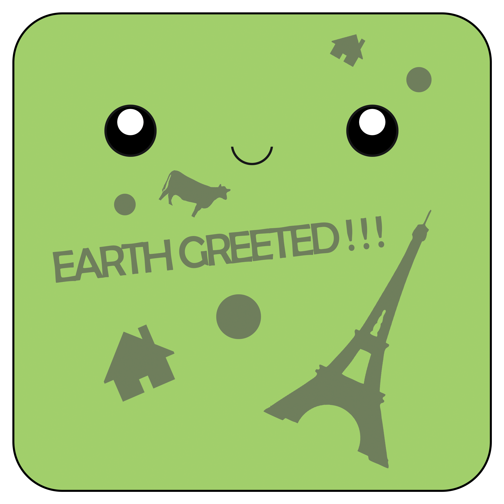

The Tale Of Radley is a 2D platformer that utilizes light to create unique gameplay. This was a game made in CAS 117, students were given a tutorial and a template project to work on. To make this game my own, I created my own art for everything. This included UI, character animations, background art, and rule tiles. I also added my own music and and created 3 unique levels with their own personality.
What made this game truly special was the light mechanic. This pulled the entire theme together and made the game pop out. The lighting mechanic was quite troubling and I was stuck for a while. This lead me to reach out to many different people. This gave me insight to many new ways to implement light into my game. This game was shown at the MSU game dev showcase!
